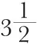

中文
中文N. Feather
Editor’s Note
Physicist Norman Feather offers a review of advances in the understanding of nuclear fission reactions, and the possibility of a controlled chain reaction. In retrospect, he notes, the first evidence for fission in uranium nuclei came in experiments by Enrico Fermi and colleagues in 1934, though five years passed before the physics could be clarified. It was now clear that each such fission gave off several neutrons on average, and may well suffice to drive a sustained chain reaction. However, experiments also showed that slow “thermal” neutrons are most effective in stimulating fission events. No experiments on chain reactions had at that point been carried out, however. 中文
THE first indication that the transmutation of heavy nuclei could be effected in a laboratory experiment was obtained by Fermi in March 1934. Curie and Joliot had just discovered that short-lived radioactive species are produced as the result of α-particle bombardment of certain light elements, and Fermi, accepting the appearance of such “induced” radioactivity as proof of transmutation, very soon showed that the nuclei of almost all elements, even those of highest atomic weight, undergo transformation when neutrons are used. From his early experiments Fermi concluded that in general the neutron is simply captured by the nucleus, and he went on to show that this process of capture is usually more efficient—and sometimes very much more efficient—when the neutron is moving with a small (“thermal”) velocity, before the collision, than when its energy is large. Eventually he found that negative electrons were emitted in the disintegration of the radioactive products obtained in all these capture transformations, and thus the final result of the combined process of neutron capture and β disintegration was in every case shown to be the production of a nucleus having both mass and charge numbers greater by one unit than the mass and charge numbers of the nucleus bombarded. 中文
In June 19341, Fermi and his collaborators obtained negative electron activities from thorium and uranium under neutron bombardment, and they quite naturally supposed, on the basis of their previous investigations, that in the latter case a nuclear species of atomic number Z = 93 must remain after disintegration of the unstable product first formed. Further examination showed that not one but several distinct radioelements were produced as a result of the bombardment of uranium, and rough chemical tests proved that one of these, at least (half-value period τ = 13 minutes), was not attributable to an element of atomic number Z = 92, 91, 90, 89, 88, 83 or 82. It seemed quite clear, then, that after the uranium nucleus had captured a neutron, not less than two β transformations followed, and consequently that a new element, for which Z was not less than 94, was ultimately produced. These conclusions at once gave rise to much argument amongst chemists as to what the chief chemical properties of these hypothetical transuranic elements might be, but a great deal of careful research in many physical laboratories throughout the world only served to strengthen the assumption that, apart from any preconceived ideas about chemical behaviour, such elements were certainly formed when uranium was bombarded by neutrons. 中文
By May 1937, Meitner, Hahn and Strassmann2 had recognized the existence of nine separate species arising from this transformation, and had suggested genetic relations between them which supposed that every element of atomic number between (and including) 92 and 97 was represented, either as intermediate or end product of a series. They identified three of these nine products (τ = 10 sec., 40 sec., 23 min.) as unstable isotopes of uranium, and the remainder, which could all be obtained by precipitation with platinum as sulphide in acid solution, as the transuranic elements already mentioned. The scheme presented certain difficulties, it was admitted, (no evidence for the final return of the unstable nucleus within the ordinary range, Z less than 93, could be found, and awkward questions concerning isomeric forms were raised in an acute form) but it was the best that could be done. 中文
Then, in October 1937, Curie and Savitch3 discovered a tenth activity of about

hours period, and at once proceeded to investigate the chemical nature of the element to which it belonged. They showed that this radioelement did not separate with the platinum precipitate and soon discovered that it bore a close resemblance to lanthanum in chemical behaviour. At first the most plausible suggestion appeared to be that the new species was an isotope of actinium (Z = 89). Then two very disturbing facts were encountered. First, a body of the same period and almost identical properties was among the active products formed in the disintegration of thorium by neutrons, and, secondly, it was found possible to separate actinium almost completely from the new body by a lanthanum fractionation. In September 1938, Curie and Savitch4 wrote, “On the whole, the properties of R 3.5 h. are those of lanthanum, from which it appears that until now it has not been separated”. 中文
The work of Curie and Savitch immediately prompted a further search for activities belonging to elements of atomic number less than 92 produced in the uranium transformation, and, as a result, Hahn and Strassmann5 discovered two other lanthanum-like and three barium-like products. These workers believed that they had demonstranted the production of each of the former species from one of the latter, but at that time they still inclined to the view that actinium and radium isotopes were really in question. However, in January of this year, they reported6 that fractionation of the new bodies with mesothorium and barium (or lanthanum) invariably concentrated the neutron-produced activity with the lighter carrier and resulted in a complete separation of mesothorium 1 (radium), or mesothorium 2 (actinium). The conclusion now appeared inescapable that active isotopes of barium and lanthanum were among the products of the bombardment of uranium with neutrons. 中文
At this stage, Meitner and Frisch7 discussed the problem on the Bohr theory of heavy nuclei, making particular use of the essentially classical “water-drop model” of the highly condensed system of particles of which such a nucleus is constituted. They concluded, “It seems therefore possible that the uranium nucleus has only small stability of form, and may, after neutron capture, divide itself into two nuclei of roughly equal size. ... These two nuclei ... should gain a total kinetic energy of c. 200 Mev. ... This amount of energy may actually be expected to be available from the difference in packing fraction between uranium and the elements in the middle of the periodic system”. Then Frisch8 obtained direct evidence for the projection of fission fragments with approximately the energy predicted, being able to detect the production of large bursts of ionization in a uranium-lined ionization chamber which was irradiated by neutrons. Similar results were obtained when thorium was substituted for uranium in the chamber, and it was concluded that some of the activities previously ascribed to isotopes of radium and actinium, in this case also resulted from fission of the nucleus under neutron bombardment. 中文
The investigations begun by Meitner and Frisch were rapidly followed by many others in physical laboratories both in Europe and in the United States: the confirmation of the findings of Curie and Savitch by Hahn and Strassmann had indicated quite clearly to many workers that something new was involved. In Paris, in Berkeley, in Washington, New York and Baltimore, direct proof of the fission of uranium and thorium was obtained within the space of a few days. Now, some three and a half months after the original announcement, so much has been published that rigorous selection is necessary in any report on the subject. For the remainder of this survey, therefore, only the most interesting features of the new phenomenon can possibly be included. 中文
Perhaps the first such feature concerns the radioelements of the platinum precipitate, of which the previously supposed transuranic nature was now in question. Before the fission process was discovered, both in Berkeley and in Cambridge projects had already been formed of investigating these elements for natural X-radiations, in the hope of being able to deduce the atomic number from the energy of the radiations (natural L-radiations) as determined by the method of critical absorption. This problem became much simpler once the presence of medium-heavy elements was suspected, since K-radiations could be looked for, instead of the more complex radiations of the L-series. Almost at once, Abelson9 and Feather and Bretscher10 found evidence for the natural K-radiations of iodine from the long-lived activities of the platinum precipitate, and, guided by this observation, were able to identify chemically as tellurium and iodine two products previously described as eka-iridium and eka-platinum, respectively. Then several workers found other of the so-called transuranic activities in the products collected by recoil from bombarded uranium. Observations concerning the rates of decay of these recoil activities11—and the results of chemical tests12—left little doubt that almost all the previous assignments had been seriously in error. At the present time, one might justly say that it cannot definitely be maintained, concerning any of the activities separable from uranium, that it does not arise in a process of fission of the uranium nucleus. 中文
There is, however, one important activity, of 23 minutes half-value period, which is not separable from uranium and for which, in consequence, the fission process cannot be assumed to be responsible. This non-separable activity arises in a process of resonance capture of neutrons of about 25 ev. energy, and the fact that negative electrons are involved must clearly indicate that a species for which Z = 93 is formed as the result of the disintegration. Yet, in spite of much careful investigation, no radioactivity of any kind has been discovered which is unquestionably due to the transformation of this species. Furthermore, in respect of the parent species (the uranium isotope for which τ = 23 min.),this is clearly a quasi-stable modification of the body which undergoes fission in the majority of cases, and Meitner and Frisch and Bohr13 have discussed this aspect of the phenomenon. They have pointed out that there is nothing intrinsically incomprehensible in the occurrence of resonance capture (emission of γ-radiation) rather than fission in certain circumstances. In any event, division of the nucleus into two fragments must be preceded by the concentration of the available energy in a type of nuclear motion of large deformation, and this concentration may be very unlikely if the original state of the system, after capture of the neutron, is one of considerable symmetry. Or if, as Bohr has assumed, the effect of thermal neutrons in producing fission in the case of uranium (such neutrons are quite ineffective when thorium is bombarded) is ascribed to capture by the rare isotope 235U, and the resonance effect and the fission process due to fast neutrons are ascribed to 238U, it may even be that, at the resonance energy, the compound nucleus is not formed with sufficient energy of excitation for the neutralization of the small stability of form which it naturally possesses. As regards the whole of this question, more definite conclusions must clearly await further experiments: Joliot14 has reported a variation in the relative proportions of the different fission products as the energy of the neutrons is altered—and this might be held to favour the suggestions of Bohr—but Bjerge, Brostrøm and Koch15 have failed to establish any difference in the decay of the products obtained with high-energy neutrons and thermal neutrons, respectively. 中文
Hitherto, the process of fission has been spoken of without any precise statement regarding the nature of the fragments which result from the primary act of division of the nucleus, and in fact very little exact knowledge is as yet available on this point. Determinations of the range of the fission products provide some information. In the first place, they indicate that (with uranium and fast neutrons) the process occupies less than 5×10－13 sec. from the time of capture of the neutron (the forwards range is slightly greater than the backwards range, showing that very little of its original momentum is lost before the compound nucleus divides16), and, secondly, they appear to favour a very small number of competing primary processes, rather than a large number of possibilities17. On the other hand, chemical investigation reveals such a wealth of active products18 (with atomic numbers lying between 35 (Br) and 57 (La), if not more widely distributed) that some adequate explanation of their complexity must certainly be found. It would appear that the discovery that very frequently neutrons are emitted almost instantaneously by the original products of fission19 already provides a basis for such explanation (nuclei, first formed, presumably, in states of high excitation, emit either neutrons or quanta of radiation in passing to longer-lived states). Also, even after these states have decayed with β-emission, experiment shows that occasionally product nuclei result, still with sufficient energy of excitation for the “evaporation” of neutrons to be a possible alternative to radiative transitions leading to more stable states. In this connexion, Roberts, Meyer, and Wang20 and Booth, Dunning and Slack21 have reported delayed neutron periods of about 12 sec. and 45 sec., when uranium is bombarded, whilst a similar feature has also been established in the case of thorium. 中文
The frequency of the neutron-evaporation process accompanying fission, and the energies of the neutrons so produced, have been studied by many workers, but so far most exhaustively by Joliot22 and his colleagues, and by Fermi23 and others in New York. The general result appears to be that, for each process of fission with uranium, at least two neutrons, having a mean energy of the order of 106 ev., eventually evaporate from the residual fragments. Since neutrons of less than this energy are still capable of producing fission on their own account (probably in 235U, as already suggested), the possibility of a cumulative process of exothermic disintegration has to be considered. Clearly, if the probability of removal of neutrons in processes other than those which result in fission is sufficiently reduced, the latter process must eventually build up in any solid substance containing uranium. Direct experiments on this aspect of the matter have not yet been reported in the scientific literature, but at this stage it may be pointed out that, even in pure uranium, it is well known that a non-fission capture process takes place (v. sup.), whilst the unlimited generation of energy in the solid material would ultimately increase the energy of the “thermal” neutrons until their efficiency as agents for fission was greatly reduced. Already several attempts have been made24 to calculate the course of the phenomenon using existing data, but the assumptions upon which they have been based have generally been so severely idealized that no confidence in numerical values is at present likely to result. 中文
(143, 877-879; 1939)
N. Feather: Cavendish Laboratory, Cambridge.
References:
1. Nature, 133, 898 (1934).
2. Z. Phys., 108, 249 (1937).
3. J. Phys., 8, 385 (1937).
4. J. Phys., 9, 355 (1938).
5. Naturwiss., 26, 755 (1938).
6. Naturwiss., 27, 11 (1939).
7. Nature, 143, 239 (1939).
8. Nature, 143, 276 (1939).
9. Phys. Rev., 55, 418 (1939).
10. Nature, 143, 516 (1939).
11. Meitner and Frisch, Nature, 143, 471 (1939). Glasoe and Steigman Bull. Amer. Phys. Soc., (2), 14, 20 (1939).
12. Bretscher and Cook, Nature, 143, 559 (1939).
13. Phys. Rev., 55, 418 (1939).
14. J. Phys., 10, 159 (1939).
15. Nature, 143, 794 (1939).
16. Feather, Nature, 143, 597 (1939).
17. McMillan, Phys. Rev., 55, 510 (1939).
18. Heyn, Aten and Bakker, Nature, 143, 516 (1939). Abelson, phys. Rev., 55, 670 (1939).
19. v. Halban, Joliot and Kowarski, Nature, 143, 470 (1939).
20. Phys. Rev., 55, 510 (1939).
21. Bull. Amer. Phys. Soc., (2), 14, 19 (1939).
22. v. Halban, Joliot and Kowarski, Nature, 143, 680 (1939). Dodé, v. Halban, Joliot and Kowarski, C.R., 208, 995 (1939).
23. Anderson, Fermi and Hanstein, Phys. Rev., 55, 797 (1939). Szilard and Zinn, Phys. Rev., 55, 799 (1939).
24. For example, Perrin, C.R., 208, 1394 (1939).